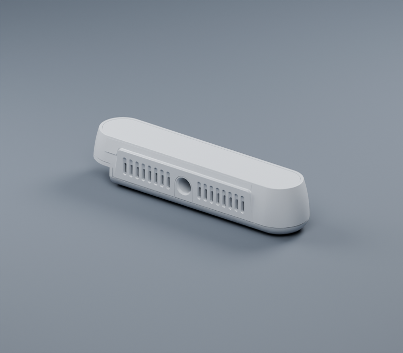
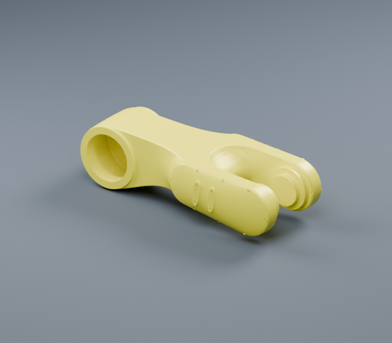
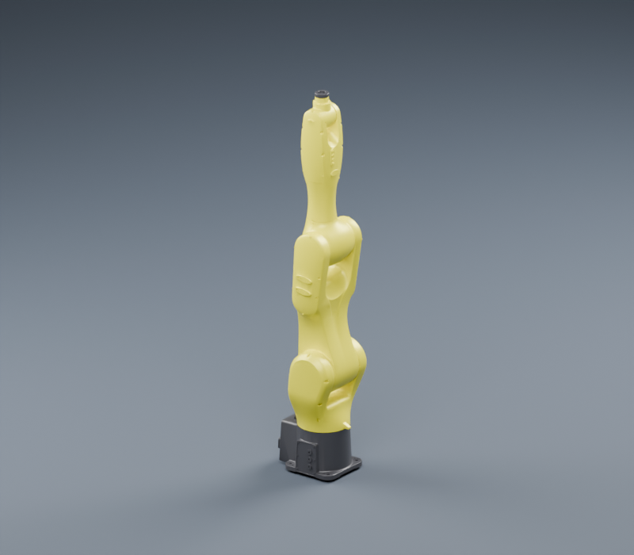
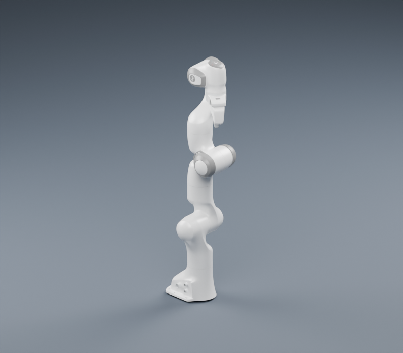
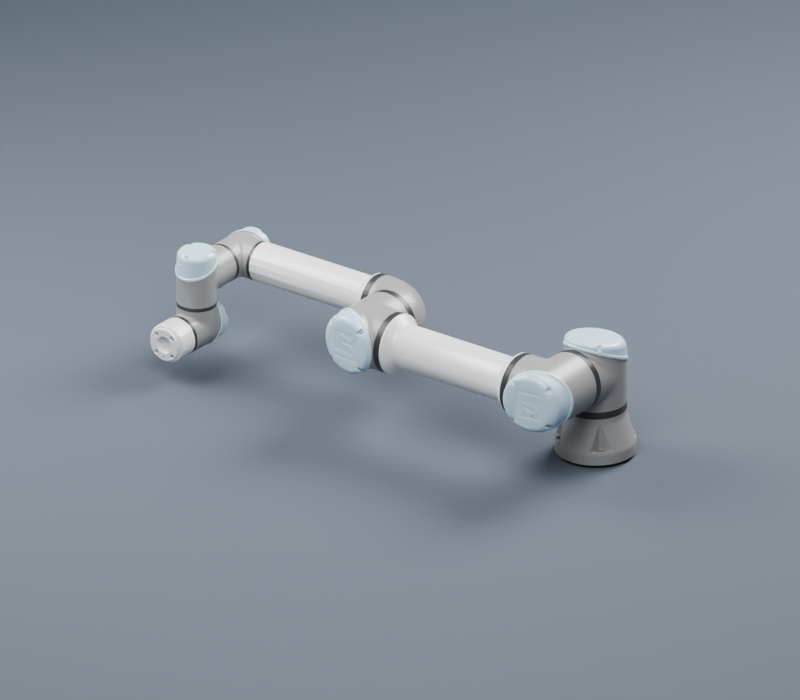
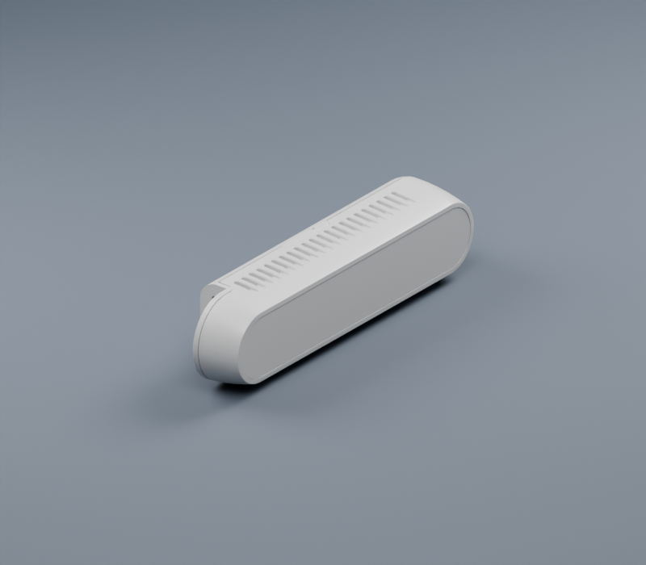

拖动滑块查看实际模型的减面前后效果。两侧使用同一套渲染参数；减少密集面片，并保留原材质与机械轮廓。
425,160 → 20,000 面 · 减少 95.3%

330,132 → 33,012 面 · 减少 90.0%

使用各模型自带材质的零姿态展示。



783 个 GLB 与 67 个 URDF。网格按 glb/ 与 stl/ 分层存放，DAE 已移除；可直接复制所需模型目录。

平滑曲面与硬边法线 · 实际 GLB 装配渲染
保留材质分组和链接坐标 · 实际 GLB 装配渲染